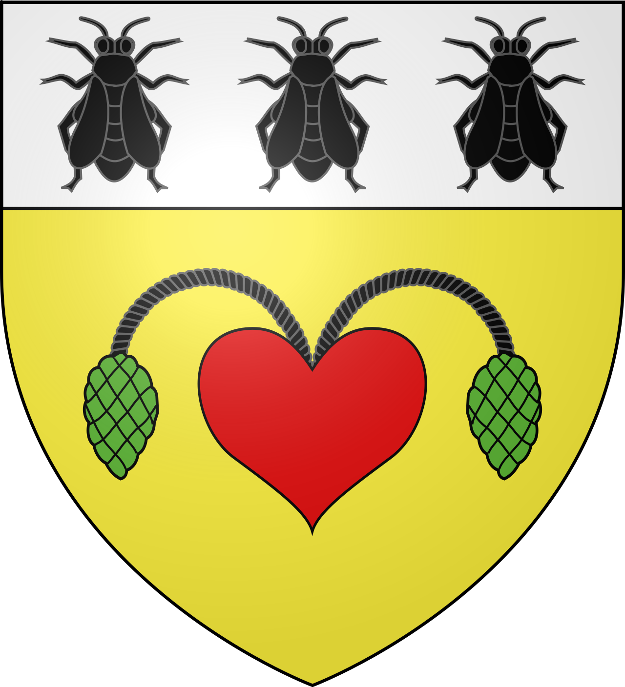

LaroqueHistoire & origines — Village fortifié
à la porte des Cévennes


⟹ Cévennes héraultaises ⟸

Le site de Laroque doit d’abord son histoire à sa géographie. Le village est établi sur un piton rocheux dominant l’Hérault, précisément à l’endroit où le fleuve quitte les reliefs cévenols pour gagner la plaine. Cette position commande un passage naturel entre montagne et Languedoc méditerranéen.
La présence humaine y est très ancienne. Dans la grotte des Lauriers, ouverte dans la falaise, des vestiges préhistoriques attestent une occupation remontant au Paléolithique supérieur. Le territoire environnant conserve également des témoignages mégalithiques et des traces de circulations anciennes liées aux reliefs et aux drailles.
À l’époque antique, le rocher constitue un point d’observation privilégié. La tradition locale rattache le site à un oppidum et à des implantations gallo-romaines dans les terres voisines. Même lorsque les interprétations anciennes restent difficiles à documenter précisément, la continuité de l’occupation du passage ne fait guère de doute.
À l’époque carolingienne, le secteur se structure autour d’établissements religieux. Le prieuré de Saint-Brès, aujourd’hui en ruine à proximité du village, est associé dans la tradition locale à la période de saint Benoît d’Aniane.
Le Moyen Âge donne à Laroque sa silhouette actuelle. Sur le sommet rocheux se développe un castrum protégé par une enceinte. Il comprend un puissant donjon, un corps de logis, une demeure seigneuriale et la chapelle castrale Saint-Jean. Cette dernière, édifiée dans le premier âge roman, devient un élément essentiel de la vie religieuse du bourg.
La chapelle Saint-Jean est donnée en 1155 afin de servir la paroisse. Protégée à l’intérieur des fortifications, elle conserve une importance particulière durant les périodes de troubles. L’église paroissiale Sainte-Madeleine est, elle, construite hors de l’enceinte médiévale.
La seigneurie de Laroque dépend historiquement de la baronnie de Sauve et du comté de Toulouse. Les coseigneurs de La Roque sont durablement associés au lieu. Le contrôle du passage est un enjeu économique autant que militaire : une ancienne draille traverse le bourg et permet de surveiller hommes, troupeaux et marchandises.
Au XIVe siècle, le village s’étend vers les rives de l’Hérault. Une enceinte basse complète alors les défenses du castrum, dans un contexte marqué par la guerre de Cent Ans, les compagnies de routiers et les conséquences de la peste noire. Les portes du bourg permettent de contrôler le passage et de percevoir des droits.
Les fortifications connaissent ensuite plusieurs transformations. La mémoire locale conserve notamment le souvenir d’interventions du pouvoir royal contre les places féodales. Une brèche dans l’enceinte extérieure est traditionnellement associée aux mesures de démantèlement prises à l’époque de Richelieu.
Les guerres de Religion touchent profondément ce territoire situé aux portes des Cévennes protestantes. La chapelle castrale, mieux protégée, retrouve alors un rôle de refuge religieux. Laroque demeure un lieu de passage entre des espaces confessionnels longtemps opposés.
L’Hérault est l’autre grande force structurante du village. Une chaussée médiévale crée un plan d’eau et alimente le moulin seigneurial. Au fil des siècles, le fleuve fournit énergie, ressources et voies de circulation, tout en imposant le risque régulier des crues.
Aux XVIIIe et XIXe siècles, l’économie locale s’inscrit dans celle du pays gangeois : agriculture, élevage, artisanat et activités liées à la soie se combinent. La proximité de Ganges et de ses manufactures place Laroque dans un bassin d’échanges particulièrement actif.
À la fin du XIXe siècle, l’église Sainte-Madeleine est rehaussée afin de mieux résister aux inondations. Cette adaptation rappelle combien l’histoire bâtie du village reste liée aux variations de l’Hérault.
Aujourd’hui, le donjon, la chapelle Saint-Jean, les maisons anciennes, les vestiges d’enceintes et les ruelles composent un ensemble patrimonial remarquable. Laroque a obtenu le label Petite Cité de Caractère®, reconnaissance d’un paysage urbain où l’histoire médiévale demeure particulièrement lisible.
À Laroque, l’histoire se lit dans le relief, les pierres, les chemins et les usages transmis par les générations.
Synthèse historique et patrimoniale